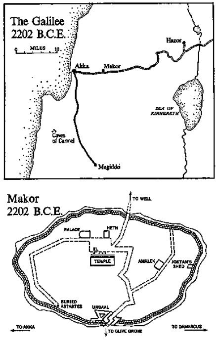

Clay figure of the Goddess Astarte
Clay figurine of the Canaanite goddess of fertility, Astarte or Ashtart. Known to the Hebrews as Ashtoreth (plural Ashtaroth), to the Babylonians as Ishtar and to the Greeks as Aphrodite, this goddess appears repeatedly throughout the Old Testament as a permanent temptation to the Hebrews. Struck from a two-part mold in the seaport of Akka, 2204 B.C.E. Fired at 750° centigrade. Purposely buried beside the wall of Makor sometime after dark on an autumn evening in 2202 B.C.E.
High in the heavens over the desert a vulture wheeled, its glinting eye fastened to an object almost invisible in a clump of brush that grew where the drifting sand met fertile earth. Its wings fiat against the rising currents, the powerful bird drifted aimlessly in huge circles, but kept its sharp eye focused on the tiny object below, which seemed to be hesitating between death and life. The vulture showed no impatience, nor did it change its elevation. If the decision were to be death, the rapacious bird could drop quickly enough, and in the meantime its steady, waiting flight continued.
Then a change occurred. It appeared that death had come, and quickly the hovering bird ceased its drifting and inclined its wings into a steep dive. From the warm rising current which had sustained it, the vulture entered into the cold outer layers, descending in a great arching curve, its sharp eye fixed on the object that had just died. Speed and determination were necessary, for before long other birds would spot the lifeless target and would come swooping in to claim it, but on this day the solitary vulture was to be the angel of death and it sped down on silent wings.
On the ground a small donkey lay trapped with its hind leg pinched into the fork of a desert shrub, and its efforts to extricate itself had brought exhaustion. Vainly it had cried and twisted and pulled and now it could do no more. Death was very close, for from the desert came a torrid wind that intensified the little creature’s thirst, and in its last extremity the donkey ceased struggling; it was this surrender that the soaring vulture had interpreted as death, and now through dimmed eyes the little beast could see the final bird approaching. Both were prepared for death.
At that moment, pushing his way through the bushes that marked the edge of the desert, appeared a nomad wearing sandals whose thongs came upward about his ankles; across his right shoulder was fastened a cloak of yellow marked with red crescent moons. He wore a beard and carried a crooked stave which he used to knock aside the impeding brush, and from time to time he stopped to listen for a donkey that had disappeared from his caravan. He heard no sound but his eye did mark the descending flight of the vulture, and by a calculation which he had learned from his father, who had also been a nomad, he deduced from the actions of the scavenger where his donkey might be. He was afraid, from the appearance of the vulture, that the little creature was already dead, but nevertheless he hurried on, and in a moment his shepherd’s crook pushed aside the last brush—and at its base he saw his donkey very close to death, but now restored to life.
The vulture, robbed of this promised meal, uttered a croaking cry of anger, then sought an ascending current, on which it rose in great circles to a height from which it was almost invisible to the herdsman in the brush at the edge of the desert, and then remembering past good fortune, it drifted effortlessly to the west, over green lands from which it had often feasted in earlier days, until it came to the mound of Makor, in whose town another contest between death and life was about to occur, involving more important characters than a stray donkey, and more complicated forces than a hungry bird and a nomad dressed in a yellow cloak with crescent moons.
It was in the early summer of 2202 B.C.E., and in the more than seven thousand years that had elapsed from that day on which the Family of Ur had erected its monolith on the rock a sequence of changes had transformed the area. One unrecorded civilization after another had flourished briefly—successful ones had lasted a thousand years; the unsuccessful, only two or three hundred—but each had left behind an accumulation of rubble as its buildings were demolished and its inhabitants led away to slavery. Ruins had grown upon ruins until some twenty feet of debris obscured the original rock, obliterating even its memory, except that from its secure footing in the high place the ancient monolith still pushed its head through rubble to protrude a few feet into sunlight. It was the holiest object in this part of the land and was believed to have been placed in its exalted position by the gods themselves.
The rest had vanished. The roof of the cave was collapsed and the mouth, which had seen so much traffic in its numberless millennia, was filled in, so that not even goats could creep into the cool retreat that had served them for so many years. At the well, which still explained the concentration of life in the area, earth had built up until ropes thirty feet long were required to reach water, and the rocks that formed the upper lip of the well were worn with deep grooves showing where the girls of Makor had guided their ropes while hauling up the water.
The mound now housed a town of a hundred mud-brick houses located along winding streets, and contained a population of some seven hundred people who engaged in trade, kept animals, and grew agricultural produce in the fields south of town. The most conspicuous change, however, was the great wall which surrounded the settlement and which kept off all but the most determined invaders. It had been erected sometime around the year 3500 B.C.E., when a people whose tribal name was no longer remembered decided in desperation that they must protect themselves or perish. Accordingly, they had built a massive wall nine feet high and four feet thick, using no mortar but only large chunks of unworked rock piled loosely atop one another. From a distance the wall looked as if at any given point it might easily be breeched, but when the attackers moved close they found that against the inner face of the stone the defenders had jammed a second wall of beaten earth, eight feet thick, and had faced it with two additional feet of rock, so that anyone seeking to pierce the defenses had to hack his way through fourteen feet of rock, then earth, then rock, and this was difficult to do.
In the thirteen hundred years that the wall had stood, it had been assaulted sixty-eight times—once every nineteen years on the average—by Hittites and Amorites from the north, by Sumerians and Akkadians from the Land of the Two Rivers, later known as Mesopotamia, and by Egyptians from the Nile. Even the predecessors of the Sea People, making preliminary forays on the port of Akka, had tried to capture Makor, too, but of the numerous sieges only nine had succeeded. In recent centuries the town had been totally destroyed—that is, burned to the ground and desolated—only twice, and was thus more fortunate than some of its larger neighbors like Hazor and Megiddo.
Primarily Makor was an agricultural center whose rich fields produced a surplus which could be traded for manufactured goods. During recent centuries caravans had begun moving past Makor on their way from Akka to the inland city of Damascus, and exotic goods were becoming known: obsidian knives from Egypt, dried fish from Crete and Cyprus, stacks of lumber from Tyre and fabrics from the looms east of Damascus. The wealth of Makor was controlled mostly by the king, but this word could be misleading. The size of the town and its importance in world affairs were best illustrated by what happened in 2280 B.C.E., when the neighboring city of Hazor was in trouble and called for help. The king of Makor responded, sending to the imperiled city an army of nine men.
It was strange, perhaps, that there should even be a king of Makor ruling over a town of only seven hundred persons, but in those days this was no mean assembly, and if one took into consideration the surrounding fields and undefended hamlets protected by the king, one had an area just large enough to constitute an economic unit. It never belonged permanently to any one national system; from one century to the next it had been subject to Egypt for a while, then to empires having their home in Mesopotamia. For the most part it enjoyed the same status as larger communities like Hazor, Akka and Damascus, a subject town floating this way and that as the tides of history swept in or receded.
In an age of violent change, when the super-empires were trying to establish themselves, Makor was allowed to exist only because it was a minor settlement off to one side of the major thoroughfare connecting Egypt, which had long ago builts its pyramids, to Mesopotamia, which had already built its ziggurats. It was never an important military target and could be safely by-passed, as it usually was, but after the significant battles had been decided elsewhere, victorious generals usually dispatched a few troops to let Makor know what new hegemony it now belonged to.
On the occasions when Makor had to be destroyed, its population was dealt with severely: all men who could be caught were massacred; their wives were raped and dragged off to harems, and their children led away to slavery. Later, when peace came, other groups would move in to take their places and to rebuild the town, and this accounted for the varied types one saw in Makor. There were tall, slim Canaanites with sunburned complexions, blue eyes, small noses and well-defined chins, while those who came from Africa were dark. Hittites wandering down from the north were swarthy, squat men with powerful bodies and large hooked noses, but those from the southern desert were lean and hawk-faced. They were the Horites. Even some of the Sea People had decided to live ashore—robust, thick-chested men. They were the forerunners of the Phoenicians. And all lived together in a kind of indifferent amalgam, finding for themselves about as good a life as was then available in the area.
In this age of uncertainty, only one thing was certain: the confusion about religion had been permanently settled. It was now known that the world was governed by three benevolent gods—storm, water, sun—and each was represented by a special monolith rising from the high place in the center of town. There was, of course, a fourth stone in the solemn line facing the temple, sacred beyond all others, rounded on top by erosion and almost submerged in earth that had accumulated through the years. Because it looked something like a human penis, it was revered as the father of all gods and was known as El, but in appearance it was trivial, rising only a few feet from the soil, whereas the others were impressive monuments. It was as if the god to whom the rock-penis belonged was old and worn out; he was still revered by his subjects as a potent force, the source of all power, the god El.
After these major gods came the multitude of others for whom no monoliths were raised at the high place but to whom prayers were said daily: gods of the trees, the rivers, the wadi, the birds, the ripening grain, and particularly gods for any feature of the landscape that stood out prominently. Thus the hill behind Makor had its god, as did the mountain that stood behind it. Baals, they were called, little baals and greater baals, and each was worshiped in a separate way, but there was one special god whom all the citizens of Makor kept close to their hearts, and this was Astarte, the tempting, rich-breasted goddess of fertility. It was she who brought the grain to ripening and the cow to calving, the wife to the birthing stool and chickens to the nest. In an agricultural society, smiling little Astarte was the most immediately significant of all the gods, for without her nothing that concerned the cycle of life could come to pass.
By and large the baals had been generous to Makor, for even though the town had been twice destroyed, it had been revived and under Astarte its fields prospered, but few were the families who could say, “We have lived in Makor for many generations.” Most were newcomers, but in one rambling mud-brick house to the west of the main gate, its back tucked snugly against the wall, lived a man whose ancestors through one trick or another had managed to survive both war and occupation. When bravery was called for, the men of this resilient family voluntarily leaped with their spears to the ramparts, but when defeat became inevitable they were the first to scramble into some hiding place, covering themselves until massacre and fire were over. And with the coming of each peaceful cycle they returned to their expanding olive groves and wheat fields.
The present scion of this resourceful clan was the farmer Urbaal, thirty-six years old, lineal descendant of that great Ur whose family had started farming at Makor and who had erected in the high place the monolith which was to become the god El. Urbaal was a husky man, stout and strong as becomes a farmer, with big teeth that flashed when he smiled. Unlike others of his age, he was not bald nor was he inclined to fatness. In war he had proved himself a good soldier and in peace a productive farmer. He was gentle with his wives, boisterous with his children and kind to his slaves; and if he had wanted to be king or high priest, he could have been either, but his love was farming and women and the growth of things. But now he had a consuming worry, and as he hurried from his house to the high place where the monoliths stood facing the temple, his forehead was wrinkled and he thought: My well-being for the whole year depends on what I do right now.
The street which led from Urbaal’s house did not march impressively from the main gate to the temple area; to do that would have required planning. Instead, it dodged and twisted in unforeseen ways like the hit-or-miss village footpath it had once been, and as the farmer passed along its inconvenient cobbles, citizens of the town nodded pleasantly; but he did not acknowledge them. His mind was preoccupied with serious matters, and when he reached the high place he proceeded gravely to the farthest monolith, the remnant that barely pushed its head through the earth, and bowed before it, kissing it many times and mumbling, “This year, great El, let it be me.” He then moved to each of the other three and uttered similar prayers: “Baal-of-the-Storm, this year let it be me. Baal-of-the-Waters, Baal-of-the-Sun, I have asked you for little.”
He crossed the square and entered the cluttered shop of Heth, a Hittite who dealt in goods imported from many areas, and there he said to the bearded man who stood beside lengths of cloth, “This year I must be chosen. What shall I do?”
“Why not consult the priests?” Heth evaded.
“From them I’ve learned all I can,” Urbaal replied, pretending to inspect a large pottery jar brought down from Tyre.
“All I can tell you,” Heth replied, “is to tend your groves.” He looked at the troubled man, then added slowly, “And buy for yourself the best Astarte you can find.”
This was the kind of counsel Urbaal had sought. Turning from the pottery, he brought his face close to Heth’s and asked the bearded merchant, “Would that help?”
“It’s how Amalek won last year,” the merchant assured him.
“I already have three statues,” Urbaal protested.
“With your trees? Is three enough? Really?” The wily trader stroked his beard and stared at the rich farmer.
“I’ve wondered myself,” Urbaal confessed. He turned away from Heth and walked about the small shop mumbling to himself. Then, like a child pleading, he grasped Heth’s hand and asked, “Do you truthfully think it would help?”
Heth said nothing, but from a corner he produced a small clay figure of a goddess. She was six inches high, nude, very feminine, with wide hips and hands cupped below circular breasts. She was erotic and plump, delightful to study and reassuring to have in one’s presence. The merchant was obviously proud of her and was bound to ask a good price.
Urbaal looked at the statue with special concern. To him this was not a piece of cleverly molded clay, no abstract theological symbol. It was the veritable goddess Astarte who determined the fertility of land, of women, of olive trees. Without her help he was powerless. He could pray to Baal-of-the-Waters and to Baal-of-the-Sun, and they could send the right amounts of rain and warmth, but if Astarte frowned olives would not produce oil; and unless she smiled he could not win this year.
He adored Astarte. Others feared her capriciousness—famine one year, abundance the next—but he had adapted himself to her arbitrary behavior. He worshiped her faithfully and in return she had been good to him, as she had been to his fathers before him. If the fields and the beehives of Urbaal prospered, even when others failed, it was because he and Astarte had reached an understanding.
“The statue you sold me last year worked,” the farmer rationalized as he looked at the new goddess.
“For three years you couldn’t get Timna pregnant,” Heth pointed out. “Then, with the proper statue …”
“I’ll take it!” the farmer decided. “How much?”
“Seven gurs of barley, seven of wheat,” Heth replied.
Urbaal had known that the price would be steep, but now he did some calculations. “That’s more than fourteen gin of silver,” he said. “Last year it was only eight.”
“It is fourteen,” Heth agreed, “but this Astarte is special. She wasn’t made by hand, like your others. They’ve found a new way in Akka, and it costs.”
“I’ll take her,” Urbaal said, and he picked up the little goddess, put her to his lips, and went back across the plaza to where the monoliths stood.
The secret of Urbaal’s success in farming lay in what he was now about to do. He knew that if Astarte was the goddess of fecundity, she must cherish the sexual act as the source of her power, so he never left his goddesses alone but saw to it that they were generously provided with male gods. Bearing his new goddess to the ancient monolith of El, he introduced her to the half-hidden one and whispered, “Tonight, great El, you can come to the house of Urbaal, where the goddess will be waiting.” He then took her to the other baals, holding her seductively against them, rubbing her body against theirs and whispering, “Tonight, when the moon goes down, come to the house of Urbaal, where Astarte will be waiting.”
Holding the little goddess tenderly in his cupped hands, he bowed to the four monoliths and started homeward, but as he did so, along the porch of the temple there passed a tall girl of sixteen wearing rough-spun robes and golden sandals. She was slender, and with each step her long bare legs broke through the garments; her black hair, which fell below her shoulders, moved in the sunlight. Her face had an extraordinary beauty: dark, widely placed eyes, long straight nose, high cheekbones and silken skin. She walked with conscious grace and was aware of the effect she created on men, for that was her purpose.
Ever since her arrival in Makor, a slave captured during a raid to the north, Urbaal had been fascinated by her. He saw her striding through his dreams. She was in his olive groves when he inspected them, and when the girls of Makor trampled his grapes she was among them, the red juice staining her long legs. Even when the farmer’s second wife, Timna, had had her child, Urbaal could think only of the tall slave, and it was she who had driven him to purchase his fourth Astarte. Clutching the goddess closer to his heart, he watched the girl until she disappeared into another part of the temple, a man wholly captive to urges that seemed about to consume him. Bringing the clay goddess to his lips, he kissed her and whispered, “Astarte! My fields must produce. Help me! Help me!”
He waited in the shadows for some time, hoping that the tall slave might return, but when she did not he wandered disconsolately back to the main gate, a complicated zigzag affair with towers from which archers looked down into a maze of twists and turns. Long ago the town of Makor had learned that if its gate were wide and forthright, opening directly into the heart of the town, any enemy who succeeded in rushing that gate found himself comfortably inside the town, which he could then despoil. The entrance to Makor provided no such opportunity; as soon as a would-be invader passed through the main gate he had to make a sharp turn to the left, and before he could gain speed an equally sharp turn to the right, all in such tight compass that he stood exposed to the spears and arrows of the defenders who crouched above him. It was in the tangle of wall thus produced that Urbaal had his home, and it was almost as convoluted as the gate.
In the center stood an odd-shaped courtyard which served as the heart of the house, with wings radiating out in various directions. In the arm nearest the gate lived his two wives and their five children: four from his first wife, a recent boy from his second. In the opposite wing clustered the granaries, the wine pots, kitchens and rooms for his slaves, including two attractive girls who had already given him a series of children in whom he found delight. Some twenty people lived in the house of Urbaal, a center of vitality and love, and they kept it a noisy place. Peasants preferred working for this gusty man to serving in fields belonging to the temple, because although they had to work harder for Urbaal than they did for the priests, they loved him as a peasant like themselves. He ate in gulps, guzzled wine and loved to stand with them in the fields, sweat rolling down from his jug-shaped chest.
He now entered this sprawling house, passing through the courtyard, and proceeded at once to the richly adorned god-room where he kept his three Astartes on a small shelf, each accompanied by a length of stone representing one of the monoliths in the high place. His fourth Astarte he placed in position, adjusting her carefully to her new surroundings, then taking from a hidden place a piece of basalt stone which he had been saving for this purpose. It was obviously phallic, a mighty manly symbol, and he tucked it close to his goddess, whispering, “Tonight when the moon goes down, Baal-of-the-Storm will come to lie with you.” He had found that if he kept his goddesses happy they would reciprocate, but now his need was both urgent and specific, and he wished his new patroness to understand the proposed bargain: “Enjoy yourself tonight and every night. All I ask is that when the measuring comes, let it be me.”
He was interrupted by the arrival of his second wife, Timna, who normally would not enter his god-room, but who now appeared in some distress. She was the stately kind of wife that men for the past eight thousand years have represented in their statues—motherly, considerate and understanding. Her dark eyes were distended with fright and before she spoke Urbaal could guess what had happened. Some years before he had seen this same terrified look in his first wife’s eyes, when she, too, had been unable to face reality. It was the weakness of women to look so, and Urbaal prepared himself for tears. “What is it?” he asked gently.
Timna was an unusual girl who had come from Akka with her father on a trading visit, and she had won Urbaal’s respect for the congenial manner in which she had adjusted to Matred, his domineering first wife. Instead of fighting, Timna had insisted upon a house of love—which was the more credit to her in that for the first three years of her life with Urbaal she had been childless and the target of contempt from Matred, but with the recent arrival of her first son a more harmonious balance had been achieved. As a mother she could demand respect from Matred, but now, her composure fled, she told her husband, “The priest of Melak was here.”
This was what Urbaal had expected. It was bound to come and he wished he knew something that would console his gentle wife, but he had learned that in these matters nothing could be done. “We’ll have other children,” he promised. She started to weep and a clever lie sprang to his mind. “Timna,” he whispered seductively, “look at what I’ve just bought you. A new Astarte.” She looked at the smiling goddess, so bursting with fertility, and covered her face.
“Could we run away?” she pleaded.
“Timna!” The idea was blasphemous, for Urbaal was definitely a part of the land… this land… these olive trees by the well.
“I will not surrender my son,” she persisted.
“We all do,” he reasoned gently, and he pulled her to his couch, from which she could see the reassuring Astartes who promised her fertility for years to come. Placing his arm about her he tried to add his personal reassurance, telling her of how Matred had found courage to face the same problem. “At first she nearly perished with grief,” he confided, and Timna wondered how that austere woman had found a way to show grief. “But later she had four other children, and one night she confessed to me, ‘We did the right thing.’ You’ll have others playing about your knees, and you’ll feel the same way.”
She listened attentively, but in the end whimpered, “I cannot.”
He was tempted to show his irritation, but she was so gentle that he did not. Instead he reasoned, “It is to Melak that we look for protection. Great El is necessary, and we cherish him, but in war only Melak is our protector.”
“Why must he be so cruel?” Timna pleaded.
“He does much for us,” Urbaal explained, “and all he asks in return… our first-born sons.” To the farmer this was persuasive logic, and he started to leave for his olive fields, but Timna held his hands, pleading, until he felt that he must shock her into reality. “As long as Makor has existed,” he said harshly, “we have delivered to Melak our first-born sons. Matred did so. The slave girls did so. And you shall, too.” He left the room, but as he passed the courtyard he saw his latest son, six months old, gurgling in the shadows of the courtyard, and he experienced a paralyzing regret which he had been afraid to share with Timna, but she had followed him from the room and from the doorway saw his involuntary gesture of grief. She thought: Three times he has surrendered his first-born sons—Matred’s and the slave girls’. His pain is greater than mine but he dares not show it.
Timna was right. Her simple-minded husband was enmeshed in the contradictions that perplexed the men of that age, the conflict between death and life—Melak demanding death while Astarte bestowed life—and he fled from the house of gaiety where his slave girls were singing with the children, and stamped through the gate, seeking solace in his olive grove. As he walked among those lovely gray-green trees whose leaves swirled upward in varied patterns, turning new faces to the sun and shimmering like jewels, he tried to counteract death by conjuring a vision of the seductive slave girl he had watched at the temple; and he recalled the first day he had seen her. The warriors of Makor had marched out on a minor raid of no consequence, one little town pestering another, and he had not bothered to go along, but when the troops returned he had come out of his house to greet them. They had come singing through the zigzag gate and among their prisoners was this enchanting girl, then only fifteen and not a resident of the town the troops had fought against, but a slave who had been captured by that town from some site farther north. Since no specific soldier had captured her, she was claimed by the priests, who saw in her a symbol which they could manipulate for profit to the town. They had sequestered her, allowing her to be seen only infrequently, and had let it be known that she was reserved for a solemn purpose. Their plan had worked. The men of Makor were excited by her presence and were tending their fields and olive presses as never before. Now her tantalizing vision moved with Urbaal as he inspected his trees.
By habit he went first to the center of his grove, where a rounded stone, scarcely six inches higher than the earth, served as the home of the baal who commanded the olive trees. Paying his obeisance to the god, Urbaal summoned his foreman, who ran up sweating. “Still a good crop?” the farmer asked.
“Look,” the foreman said. He led Urbaal to an area of sloping rock where an ancient machine produced much of Makor’s wealth. At the highest level a deep square pit some ten feet on the side had been hacked into the solid rock. It had required both tools and patience to dig so deep a hole, but the use to which it was put required inventive genius. Rising from the middle of this first pit stood a wooden table with a high rim inside which the oily fruit of pitted olives was piled; fastened into a hole in the northern face of the pit was the butt end of a stout pole, free to move up and down with considerable leverage. Over the rimmed table fitted a heavy square of wood which pressed down to squeeze the olives and extract the oil, and it was against this pressing board that the pole was brought down with considerable force. Then, because men were scarce at Makor and could not stand hour after hour merely pulling down a pole, huge stones were provided to be hung by slings on the far end of the pole so as to keep the pressure constant day and night. It was one of the world’s first complicated machines, and it worked.
But part of its ingenuity lay in the fact that below the first pit lay a second, and below it a third. Through the solid rock connecting the various levels, some skilled workman had driven a small hole, so that by gravity the olive oil from the pressing pit could filter down into the second and then into the third, losing its sediment and impurities on the way. The entire process represented a sophisticated system that would hardly be improved upon in the next four thousand years. Urbaal, dipping his finger into the bottom pit, tasted the results and told his foreman, “Good.”
“This time you’re sure to win,” the foreman winked.
Then Urbaal exposed the fear that disturbed him. “How’s Amalek doing with his cows?”
“They say very good,” the foreman replied.
“He always does,” Urbaal said, not trying to hide his worry.
The foreman moved closer. “We could turn some dogs loose among his calves.”
Urbaal shook his head. “We don’t need such tricks, but in case he’s thinking the same way, I hope you’re guarding the pits.”
The foreman pointed to a booth which he had recently constructed, four poles stuck in earth supporting a platform two feet off the ground, roofed over with a canopy of branches. “From now till the end of harvest I’m sleeping in the booth,” the foreman said, and after praying to the baal of the oil pits Urbaal left the grove with a feeling of confidence; but as he returned through the zigzag gate he passed the one man who could destroy that feeling, the herdsman Amalek, a strong, wiry man taller and younger than himself, with huge muscles on the back of his legs and a confident, sunburned grin marking his amiable face. He was no mean opponent, for once before he had won and apparently intended doing so again. He greeted Urbaal with a friendly wave and left the town with long swinging strides.
When Urbaal reached home he received the ugly news that Timna had feared. The priests of Melak had returned to deliver their decision: “The stars indicate that we shall be attacked from the north. By a host larger than before. It is therefore essential to take steps and we shall have a burning of first sons tomorrow.” With a red dye obtained from the seashore they stained the wrists of Urbaal’s son and then directed the farmer to halt the screaming of his wife. Proving by their implacable detachment that there could be no appeal from their decision, they stalked from the house and proceeded to seven others, where they similarly stained the wrists of children from the leading families of Makor.
It was a moment when Urbaal wished to hear no lament from Timna, so he left the house and in the street encountered Amalek hurrying back to town, and when Urbaal saw the look of anguish on the herdsman’s face he knew that Amalek’s son had been selected, too. The two men did not speak, for if either had betrayed any dissatisfaction with the priests’ decision he could have brought disaster upon his household.
The priests of Makor were implacable but they were not cruel. They sponsored no unnecessary barbarity and ordered only what was required to protect the community. They were the only ones who could read, and to Mesopotamia they sent their clay tablets inscribed in cuneiform, while to Egypt they sent messages in hieroglyphic. They knew figuring and astronomy and how to manage the year so that crops flourished. Without their intelligence life in Makor would have been impossible, for they served also as doctors and judges. They supervised the king’s extensive lands, controlled his slaves and managed the warehouses in which food was stored against the day of famine. Only the priests understood the mystery of El rising silently from the earth and of Melak with the fiery throat, and if they now decided that the threat of war could be forestalled only by another burning, their judgment must be accepted. For they were judicious men, and when Makor was last destroyed a surviving priest had explained to the stragglers, “Disaster came because for the past years you have sacrificed to Melak only the sons of poor families, or boys defective.” They blamed the burning of the town on this slackening of dedication and reasoned, “If the respectable families of Makor refused Melak their first-born, why should he bother to protect them?” The logic was self-evident, so in the reconstructed town only the sons of leading families were offered to the god, and from the moment that Timna had borne her child, Urbaal had known that it must go to the fire.
Urbaal spent that night by himself in the room of the four Astartes, and there he entered upon the full conflict of death and life, for in a cradle in a corner slept his son with red-marked wrists, unaware of the ritual which he would sanctify next morning; and death was very close. But above the child stood the new Astarte smiling benevolently, and with her arrival the oil pits in the olive grove had produced their most copious run. Already she was bringing new life to the house, new fecundity, and it was possible that she would bring the tall slave girl, too. In that strange mixture of death and eroticism which marked so much of the thinking in that age, Urbaal lay on his couch listening first to his son’s even breathing, then dreaming of the slave girl whom he yearned for with such passion. Death and life pervaded his thinking, as they did the room and all of Makor.
Shortly after dawn a group of priests in red capes passed through the streets banging drums and sounding trumpets, and it was a mark of Urbaal’s confusion that in spite of the grief he felt over the impending loss of his son, he nevertheless hurried to the door to see if the tall slave girl was marching with the priests. She was not.
When the procession had made several circuits of the town, the drumming ceased, the priests separated, and mothers began to feel the ultimate terror. Finally a knock came on Urbaal’s door, and a priest appeared to claim Timna’s first-born son. Timna began to scream, but her husband placed his hand over her mouth and the priest nodded his approval, carrying the child from the house. After a while the drumming resumed and cymbals clashed. A trumpet blew and excited mutterings were heard in the town. “We must go,” Urbaal said, taking Timna’s hand, for if the mothers were not present it might be judged that they offered their sons with a grudging spirit.
But Timna, who was not of Makor, could not bring herself to attend the terrible rites. “Let me at least stay hidden,” she begged.
Patiently Urbaal took her to the room of the gods and showed her his smiling Astarte. “Last night,” he assured her, “Baal-of-the-Storm came and made sport with the goddess. I watched them. She’s pregnant now, and you shall be too, I promise you.” He dragged her to the door, pulled her hands away as she tried to hold herself to an entrance pillar. Then he lost his patience and slapped her sharply.
“What are sons for?” he asked. “Stop crying.” But when they were in the street he felt sorry for her and wiped away her tears. Matred, his first wife, who had known this day, said nothing but watched from behind. “Let her know sorrow,” she mumbled to herself.
With an aching pain in his chest Urbaal led his two wives along the twisting street to the temple square, but before he entered that sacred place he took a deep breath, set his shoulders and did his best to quell the panic in his guts. “Let us all be brave,” he whispered, “for many will be watching.” But as luck would have it, the first man he saw in the holy area was the herdsman Amalek, who was also trying to control his anguish, and the two men whose sons were to go that day stared at each other in mute pain. Neither betrayed his fears, and they marched together to the monoliths, lending strength and dignity to the ritual.
Between the palace and the four menhirs dedicated to the gentler gods had been erected a platform of movable stones, under which a huge fire already raged. On the platform stood a stone god of unusual construction: it had two extended arms raised so that from the stone fingertips to the body they formed a wide inclined plane; but above the spot where they joined the torso there was a huge gaping mouth, so that whatever was placed upon the arms was free to roll swiftly downward and plunge into the fire. This was the god Melak, the new protector of Makor.
Slaves heaped fresh fagots under the statue, and when the flames leaped from the god’s mouth two priests grabbed one of the eight boys—a roly-poly infant of nine months—and raised him high in the air. Muttering incantations they approached the outstretched arms, dashed the child upon them and gave him a dreadful shove downward, so that he scraped along the stony arms and plunged into the fire. As the god accepted him with a belch of fire there was a faint cry, then an anguished scream as the child’s mother protested. Urbaal looked quickly to see that the cry had come from one of the wives of Amalek, and with bitter satisfaction he smiled. The priests had noticed this breach of religious solemnity, and Urbaal thought: They will remember that Amalek couldn’t control his wife. This year they will choose me.
Seeking to prevent a similar disgrace in his family, which would bring him into disfavor with the priests and lose him whatever advantage he had gained from Amalek’s misfortune, he gripped Timna’s arm and whispered, “Silence.” But four other boys were consigned to the flames before Timna’s son was raised whimpering into the air and crushed down upon the voracious arms. With tumbling turns, as if he were a little ball, the infant dropped into the flames. Rancid smoke hissed from the red mouth and a cry started from Timna’s throat, but with his free hand Urbaal caught her by the neck and preserved the dignity of sacrifice. He saw that the priests had noticed his action and had smiled approval. More than ever he felt the omens were good that he would be declared the year’s winner.
The last child was a boy of nearly three—his parents had prayed that the years had passed when he might be taken—and he was old enough to understand what was happening, so with frightened eyes he drew back from the priests, and when they lifted him to the god he screamed, trying to hold on to the stone fingers and save himself, but the priests pulled away his small, clutching hands, and with a violent push sent him tumbling into the flaming mouth.
As soon as the boy had disappeared, wailing in fiery smoke, the mood of the temple changed. The god Melak was forgotten; his fires were allowed to die down and his priests turned to other important matters. Drums resumed their beat —this time in livelier rhythms—and trumpets sounded. The people of Makor, satisfied that their new god would protect them, left him smoking by the monoliths and gathered about the steps of the temple itself, where a sense of excitement replaced the terror that had recently held sway. Even the mothers of the eight boys, numb with pain, were moved into new positions, and although they must have longed to flee that place and grieve in silence, they were required as patronesses who had pleased the god with their first-born to remain in locations of honor. They were permitted neither to comment nor to look away, for this was the tradition of their society and would be forever.
When a community like Makor dedicated itself to a god of death like Melak and to a goddess of life like Astarte, the believers entered unknowingly upon a pair of spirals which spun them upward or downward—as one judged the matter—to rites that were bound to become ever more bizarre. For example, during the long centuries when the town confined itself to worshiping the original monolith El, the priests were satisfied if the town praised its god with libations of oil or food set out on wooden trays, for the inherent nature of El was such that he demanded only modest honors. And, when the three additional monoliths were added, their natures required no extraordinary honors; as for the humble baals of the olive grove and oil press, they were satisfied with simple rites: a kiss, a wreath of flowers draped over the pillar, or a genuflection.
But when the god Melak was imported from the coastal cities of the north, a new problem arose. The citizens of Makor were eager to adopt him, partly because his demands upon them were severe, as if this proved his power, and partly because they had grown somewhat contemptuous of their local gods precisely because they were not demanding. Melak, with his fiery celebrations, had not been forced upon the town; the town had sought him out as the fulfillment of a felt need, and the more demanding he became, the more they respected him. No recent logic in Makor was so persuasive as that of the priests after the destruction of the town: “You were content to give damaged sons to Melak and in return he gave you damaged protection.” Equally acceptable was the progression whereby Melak’s appetite had expanded from the blood of a pigeon to the burning of a dead sheep to the immolation of living children, for with each extension of his appetite he became more powerful and therefore more pleasing to the people he tyrannized. What he might next require in way of sacrifice no one could predict, least of all the priests, for when the new demands were announced they would not be something forced down upon the people by the priests: they would be rites insisted upon by the people, who within limits received the kinds of gods they were able to imagine.
Furthermore, the cult of human sacrifice was of itself not abominable, nor did it lead to the brutalization of society: lives were lost which could have been otherwise utilized, but the matter ended in death and excessive numbers were not killed, nor did the rites in which they died contaminate the mind. In fact, there was something grave and stately in the picture of a father willing to sacrifice his first-born son as his ultimate gift for the salvation of a community; and in later years, not far from Makor, one of the world’s great religions would be founded upon the spiritual idealization of such a sacrifice as the central, culminating act of faith. At Makor it was not death that corrupted, but life.
For in the case of Astarte things were different. To begin with, she was a much older deity than fiery Melak and perhaps even older than El himself, for when the first farmer planted wheat intentionally he bound himself like a slave to the concept of fertility. Without the aid of some god to fructify the earth the farmer was powerless. It was not what he did that insured prosperity, but what the god chose to do; and it required only a moment’s reflection to convince men that the force behind fertility must be feminine. Even the crudest representation of the female form could be recognized as a symbol of fertility: her feet were planted in the soil; her legs carried the receptacle into which the seed must be placed; her swelling womb reflected the growth that occurred in the dark earth; her breasts were the rains that nurtured the fields; her bright smile was the sun that warmed the world; and her flowing hair was the cool breeze that kept the land from parching. Once men took the cultivation of their fields seriously the worship of such a goddess was inevitable. In principle it was a gentle religion, paralleling man’s most profound experience, regeneration through the mystery of sex. The concept of man and goddess working hand in hand in the population of the world and in the feeding of it was one of the notable philosophical discoveries, both ennobling and productive; of only a few religious patterns could this be said.
But ingrained in this enchanting concept was a spiral more swift and sickening than any which operated in the case of Melak, the god of death. The homage that Astarte demanded was so persuasive, so gentle in its simplicity, that all were eager to participate. Once a goddess guaranteed a town’s fertility, certain rites became inevitable: flowers rich with pollen were placed before her, white pigeons were released and then lambs which had finished weaning. Beautiful women who wanted children but were denied them came to seek her intervention, and maidens who were to be wed gathered to dance seductively before her. Her rites were especially attractive because they were conducted by the fairest citizens of the town and the strongest farmers. A spell of beauty encased the goddess: she saw only the largest bunches of grapes, the most golden barley, and when the drums beat for her their rhythms were not martial. The spiral of Astarte was a succession of the loveliest things man knows, except that any sensible man could see where it must end, for once Makor gave itself over to worshiping the principle of fertility it became inevitable that the rites must finally be celebrated in the only logical way. And sooner or later the citizens would insist that this be done publicly. It was neither the priests nor the girls nor the men involved who demanded these demoralizing public rites: it was the people, and the inevitability of this sickening spin was about to be demonstrated anew in the person of Urbaal the farmer, who had just offered his first-born to the flames and who would, in any normal society, have been burdened with grief, as his wife was at that moment.
But in Makor, Urbaal switched easily, almost with joy, from death to life, waiting for the next celebration which had been cunningly arranged by the priests for that purpose. With mounting excitement he listened as the drums beat joyously, accompanied by a flurry of trumpets which brought the music to a vivid crescendo. It was halted by a priest who came from the temple, raising his arms above his head and crying, “After death comes life. After mourning, joy.”
A group of singers, including both old men and young girls, began chanting happily of the seasons through which the year passes. Their words spoke of growth and the fertility of animals which abided in the fields. It was a song as pristine in thought as one could have devised and it summarized in ideal form the basic elements of the fertility rites: man was able to live because the earth and things thereon increased, and anything that spurred this increase was automatically good.
The priest now spoke directly to the parents whose sons had died to protect the town: “It does not matter at what age a male dies to defend his community. The infant of months”—and here he looked at Urbaal and his wife—“is as notable a hero as the general of forty. Men are born to die gloriously and those who do so as children achieve greatness earlier than we who grow older. For them we do not grieve. They have fulfilled the destiny of males and their mothers shall feel pride.” It was an inspiring theory, and to some it brought inspiration, but not to stubborn Timna, who knew instinctively that an evil thing had been done: her son of six months had had before him the great years, and to cut him off for the good of the town was reprehensible. “But in the hour of death, even the death of a hero,” said the priest, “it is obligatory to remember life. To those whose children died to save this town Astarte, goddess of fertility and life, offers new life, new children, new fields and new animals grazing upon those fields. Now, in the hour of death, life is born again!”
The drums exploded and the songs of the singers rose to heaven as two priests from the interior of the temple led forth a priestess clothed in white. It was the moment that Urbaal had been awaiting—for this was the slave girl, tall and most radiantly beautiful. Standing at the edge of the temple steps, she kept her hands folded and her eyes downcast while the priest signaled for the music to cease, whereupon priestly hands began taking away her garments, one by one, allowing them to fall like petals until she stood naked for the approval of the town.
She was an exquisite human being, a perfection of the goddess Astarte, for no man could look at her provocative form without seeing in her the sublime representation of fertility. She was a girl whose purpose was to be loved, to be taken away and made fertile so that she could reproduce her grandeur and bless the earth. Urbaal stared with unbelieving eyes as the naked girl submitted herself to the crowd’s inspection. She was much more beautiful than he had imagined, much more desirable than he had guessed when he watched with such hungry eyes her infrequent appearances. The priests had been right in predicting that if they exhibited their new slave sparingly they could build up to the excitement that now throbbed in the crowd.
“She is Libamah,” the priest in charge announced, “servant of Astarte, and soon in the month of harvest she will go to the man who has this year produced the best, whether it be barley or olives or cattle or any growth of the soil.”
“Let it be me,” Urbaal whispered hoarsely. Clenching his fists he prayed to all his Astartes, “Let it be me.” But his rational-minded second wife, Timna, seeing this extraordinary thing—that a man who had just lost a son could be lusting so quickly after a slave girl—thought that he must be out of his mind. She saw his lips forming the prayer, “Let it be me,” and she felt sorry for him that his sense of life should have been so corrupted.
The priest raised his arms in blessing over the naked girl, then lowered them slowly to indicate that singing was wanted, and the musicians began a hushed chant to which the tall girl started quietly to dance. Keeping her head lowered she moved her arms and knees in seductive rhythms, increasing the tempo of her movements as the drums grew more prominent. Soon her feet were apart, and she was gyrating in taunting patterns until the men of the audience were biting their lips in hunger. Urbaal, watching like a fascinated boy, observed that never did the girl open her eyes. She danced like a remote goddess, being no part of the ceremony herself, but the passion of her virgin body summarized all the earth for him, and he wanted to leap onto the porch now and take her, to open her eyes, to bring her down to this world.
“In the month of harvest,” the priest shouted to the crowd, “she will belong to one of you.” Quickly his assistants covered her tall form with the discarded clothes and whisked her from sight. The crowd groaned, even the women, for they had hoped to see a more complete ceremony; but the steps were not empty for long: four well-known priestesses were led forth—many men had known these four —and they too were stripped naked, revealing far less inviting bodies than Libamah’s, but symbols of fertility nevertheless. With no delay the priests nominated four townsmen to join the priestesses, and the citizens—lucky or unlucky as the case might be—left their wives and leaped up the steps. Each grabbed for the woman designated for him, leading her to the chambers set aside for this periodic rite.
“Through them life will be born again!” the chorus chanted, and the drums echoed quietly, continuing until some time later when the men reappeared. In the days following the formal announcement that Libamah would be given ritually to the man who produced the finest crop, Urbaal spent most of his hours working at the oil press, often reaching the spot before his foreman had climbed down out of the booth in which he slept. Before he spoke to the man or looked at the results of the previous days’ pressing, Urbaal went to the rock into which the vats had been cut and there, at a knob in the rock, he paid obeisance to the baal of the oil press, thanking him for what he had accomplished yesterday and begging his help for today. He then prayed to the baal of the vats and the baal of the jugs in which the oil was stored, that it be kept sweet. Only then did he consult with the foreman, after which he went to the baal of the grove itself and to the small stone pillar representing the god of the highway along which his jugs would be transported, and to each of these baals he spoke as if the god were a living entity, for in the world that Urbaal knew, he was surrounded by an infinity of gods.
In his present preoccupation Urbaal found much assurance in the existence of these baals, for if he hoped to win the ravishing Libamah he required their assistance. It pleased him to know that he shared the earth with such puissant creatures—a god of the olive press, for example, who could produce a wonderful substance like olive oil: good for eating with bread, good to cook in, for spreading hot on one’s limbs or cool on one’s head, an oil appropriate for anointing gods or for burning at night in clay lamps. It was obvious that only a god could have called forth such a commodity, and the one who had done so should be cherished; such reliance created a psychological assurance that men of a later age would not know. The gods were immediately at hand and could be bargained with; they were friends as long as life lasted, and if perchance they turned against a man it was only because he had done some wrong which he could rectify:
“Place the burdens on me, great El, that the gods may be free. Let my back bend, that theirs may be straight.”
Thus was the song of Urbaal as he sweated at his press, striving to squeeze out the last drops of oil.
The priests, watching the diligence of the free farmers, were satisfied with the stratagem their predecessors had devised thousands of years earlier: by giving the owners of free land an incentive to work hard the temple could establish standards for judging what its slaves should be expected to accomplish. But at the same time the priests were canny men, and although they held up to their slaves the examples set by men like Urbaal and Amalek, they knew that they could not enforce such quotas, nor did they try; for on the one hand the temple slaves did not own their land, and on the other they had not the powerful attraction of a living goddess like Libamah luring them on. It was remarkable, the priests reflected as they observed the sweating Urbaal, what men could accomplish under proper enticement, and it was reassuring to see that his example permeated the community, even though few could match it.
In these midsummer days, when the quality of Makor’s harvest was being determined, Timna was led to review the principles by which she lived. She was now twenty-four years old and had come a stranger to Makor, so that some of its customs she could not comprehend, but she had never believed that life would have been much better in her home city of Akka. True, in Akka the god Melak would not have grabbed her first-born in his fiery arms, but other gods would have exacted other tribute, so she had few illusions; on balance, life in Makor was as good as it could have been in any of the neighboring communities. From time to time, however, she heard rumors in merchant circles of a much different manner of life in distant areas like Egypt and Mesopotamia. One year an Egyptian general, much harried and suspicious of everyone, had stopped in Makor, spending three days with the king, and he seemed a man who saw enormous distances beyond the confining walls of one town. On passing Urbaal’s house he had stopped out of natural curiosity to inspect the place, asking through his interpreter a series of intelligent questions.
It was from this experience that Timna had first entertained the concept that beyond Makor there was another world and beyond it another, and she wondered what authority cruel Melak enjoyed in those worlds, or to what extent half-buried El could dominate those communities. Watching her husband report to the baals of his fields, one after the other—olive grove, olive press, oil vats, oil jugs, highway, beehives, wheat, barley—she deduced that these must be very puny gods indeed, no better really than extended men, and that if one god went down or were lost it could not matter much. Now, as she found herself pregnant again, she was delighted to think that her lost son would be replaced. But when she went in to give thanks to the new clay Astarte and saw that seductive body and the enticing smile, she felt a most serious contradiction: her pregnancy had coincided with the arrival of this winsome little goddess, and perhaps Astarte had been directly responsible; but on the other hand why should anyone assume that Astarte was any more powerful or extensive in her realm than the pitiful little baals that her husband worshiped were in theirs? It was a perplexing question, but on the day she told her husband that she was pregnant again Urbaal was so delighted that when he carried her into the god-room and placed her gently on his bed, crying, “I knew that Astarte would bring us children,” she stifled her skepticism and concurred, “Astarte did it.”
But as soon as she had made this surrender she had to look at her foolish husband and say to herself: He’s happy that I’m pregnant, but not because of me. And not because of my future son. But only because it proves his new Astarte is powerful. He thinks that she will give him the right to stay with Libamah. And thus was born the contempt that she could never thereafter stifle.
As the month of harvest approached, it was obvious that Astarte had blessed not only Urbaal and his wife, but the town as a whole. Herdsmen reported record growth amongst their cattle, weavers piled bolts of cloth on their shelves, and the wheat crop was plentiful. Urbaal, at the olive grove, had riches unmatched and was already supplying oil and honey to donkey caravans from Akka, where boats were putting in from Egypt and Tyre for the surpluses. The military threats from the north had subsided, as the god Melak had predicted, and there was bounty in the air.
In the regions around Makor there had developed a tradition that would later be observed in many nations: thanksgiving for such a year of fruitfulness; and as the harvest ended, music began to sound and people prepared themselves for the forthcoming celebrations. The men who might logically aspire to winning Libamah grew nervous as the priests came to review their year’s operations, and Urbaal heard with some dismay that Amalek had done wonders with his cattle. At home Urbaal grew irritable and Timna, satisfied with her pregnancy, looked at him with a gentle condescension. It seemed ridiculous to her that a man with two wives and adequate slaves should drive himself to nervous distraction over the prospect of spending some time with a girl who, after some months of serving as the chief attraction at the temple, would gradually subside into being one of the ordinary prostitutes who were served out in batches of three and four at the conclusion of celebrations, ending at last as an unwanted old woman given to slaves in hopes that an extra child or two might be lured from her womb. In no way did she resent Libamah; the girl was pretty and Timna could understand why a man might want her, but that Urbaal should take the matter seriously was disgusting. Furthermore, the wise wife could guess at the other apprehensions that must be tormenting her husband as the time for choosing Libamah’s mate approached: there had been a year when the man chosen had been so excited and nervous that he had made a pitiful spectacle of himself, throwing the whole ritual into confusion and bringing disgrace upon Makor, so that Astarte was annoyed and refused to make the ensuing crops bountiful. One night as Timna sat brooding in the courtyard, she heard her husband praying to Astarte that he might be the chosen one, then praying a second time that if he were chosen he might be equal to the task—for it would be ridiculous to celebrate a fertility rite in which fertility was obviously impossible.
All these matters the priests took into consideration as they approached the day on which to make their final selection of the year’s representative. Amalck and Urbaal were each strong men and each had proved himself by having numerous children. The fact that Timna was pregnant again aided Urbaal’s claims, but the unusual fecundity of Amalek’s cattle was equally impressive and the priests wavered between the two.
The climax of thanksgiving began with three days of feasting in which enormous banquets were provided by the temple priests, drawing upon stores of food accumulated by their slaves in the preceding year. Cattle were slaughtered and wine from temple jugs was liberally distributed. There was dancing and tumbling and juggling. Musicians played long into the night, and passing traders were encouraged to lay up their caravans and share in the celebration.
Then, on the fourth day, the entire town and its surroundings—something over a thousand people—congregated at the temple, where appetites were whetted by having one of the prettiest of the older temple prostitutes dance nude, after which she allowed herself to be led off into one of the chambers by a youth of sixteen who had been fortified with wine to prepare him for the ritual. There was other dancing of an erotic nature, adoration of both the male and female figure, and finally the presentation of the young priestess, Libamah, who was again ceremoniously undressed by the priests. A hush fell over the crowd, and the men who might be chosen leaned forward as the enchanting girl began her final dance of the year. It went far beyond what she had done before, and as she drew to a conclusion, any man in the audience would have been a capable partner; but the priests assembled and their leader cried, “Urbaal is the man!”
The farmer leaped onto the steps and stood with his feet apart, staring at Libamah, who turned to accept him while the priests quickly stripped away his clothing. He stood forth as a powerful man and the crowd cheered as he strode forward, gathered the young priestess in his arms and carried her into the hall of Astarte, where he would lie with her for seven days.
Timna, still grieving for her son, watched the performance dispassionately and muttered, “What folly! The fertility is in the soil. It is in me.” And while others celebrated she walked slowly homeward, seeing life in a new and painful clarity: with different gods her husband Urbaal would have been a different man; and she went into his god-room, looked with abhorrence at the four Astartes, and methodically smashed the first three along with their phallic companions. She then lifted the fourth goddess and would have smashed it, too, except that in the moment of doing so she was struck by the atavistic suspicion that perhaps this Astarte had indeed caused her present pregnancy and if destroyed might end it. She couldn’t be sure, so she took the figurine and the fragments to an empty spot along the wall, where she buried them deep in earth, ridiculing as she did so both the goddess and the man who had so disgustingly committed his life to her.

The archaeologists had rigged a shower in back of the administration building, and when anyone used it he must afterward hurry along a footpath to return to his tent for dressing. One evening as Cullinane was returning, he came upon Dr. Eliav headed toward the shower, and the Irishman said, “When you’re finished, would you clear something up for me?”
The Jew nodded, and after Cullinane had rubbed down and slipped into his shorts and sports shirt he waited on the edge of his bed until Eliav appeared. “The other day,” Cullinane reminded him, “we were speaking at lunch and I described Israel as part of ‘the fertile crescent.’ You started to make some observation but we were interrupted. What did you have in mind?”
Eliav leaned against the tent pole and remarked, “To me the phrase sounds old-fashioned.”
“I picked it up in Chicago. Breasted used it for the land between Mesopotamia and the Nile.”
“It was a useful cliché,” Eliav granted, “but no longer.”
“The land’s still fertile,” Cullinane argued.
“But if you conceive of Israel as being merely passive, the arable fields over which people walked on their way to other arable fields, your thought remains passive. You miss the dynamism of our history.”
“How do you think of the land?”
Eliav took three of Cullinane’s books and laid them casually on the bed, their corners touching and with an empty space in the middle. “Asia, Africa, Europe, and this empty area—the Mediterranean. Leakey’s discoveries in Kenya last year pretty well prove that man originated in Africa at least two million years ago, plus or minus. He wandered into Israel rather late, possibly from Asia, more likely from Africa.”
“I don’t see how this relates to the fertile-crescent concept.”
“Since the area’s a natural highway, it’s always been a focus of forces. Even in geology. We’re a fracture point where continents meet and twist. Many earthquakes and violent storms. You remember what Stekelis found along the River Jordan?”
Cullinane recalled the discovery that had startled the archaeological world some years before: an area where rocks that had once been horizontal was torn apart and tilted vertically in the air. Such fractures were common throughout the world, but imbedded in his tilted areas Stekelis found parts of a skeleton and unmistakable tools of men who had been living before the upper soil had been laid down or the area tilted … say, a million years ago. “Imagine the earthquake those characters went through,” he said.
“Point I’m trying to make,” Eliav insisted, “is that even the first men in this area were caught up in violence. Ever since, it’s been the same way. Down here mighty Egypt. Up here the Mesopotamian powers. As these great forces pressed against each other, the point where they usually met was Israel. When we stand out on the tell, John, we shouldn’t visualize fertile fields but dusty Egyptians thrusting up from the south with mighty armies, and the Mesopotamians swinging down from the north with equal strength. It was in this cauldron, this violent marching of many feet, that Israel was born.”
“You think this has been the permanent characteristic?”
“Yes. Because after the Egypt-Mesopotamia struggle came the Sea Peoples arriving from the west”—with a broad sweep of his hand across the Mediterranean he indicated the coming of the Phoenicians and the Philistines with their chariots and weapons of iron—“opposing the Syrians moving in from the east. More fractures, more violence, then the Greeks from the west locked in mortal combat with the Persians from the east. Then Romans on their way to fight Parthians. And Byzantines thundering against the Arabs. Most dramatic, I suppose, were the Crusades, when Christians from Europe smashed against Muslims from Asia. This was always the battleground, the focus of forces. In recent times we’ve had Napoleon here battling the Turks in Acre, and lately the Germans of Rommel trying to capture Jerusalem and Damascus.”
“You think the focus-of-forces concept more meaningful than the old fertile-crescent idea?”
“Yes, because it reminds us of the conflict and the intellectual confrontation we’ve witnessed.”
The manner in which Cullinane sat on his bed caused his left hand to represent the armies of the west and his right the east. Bringing them together with a bang over Israel, he recalled the struggles Eliav had summarized: Egypt versus Babylonia; Greece crashing against Persia; Rome vanquishing the east; Crusader fighting infidel; and finally Jew battling Arab. “All right,” he conceded, “this is where violence met violence. What am I supposed to conclude?”
“I don’t rightly know,” Eliav confessed. Then tentatively he added, “But I do know that if you visualize Israel merely as a stopping place along a fertile crescent where placid farmers rested on their way to Egypt, you miss the whole point. It wasn’t like that at all. It was a meeting place of dynamisms. And because we Jews were at the focus of forces we became the most dynamic of all. We had to. To stay alive. We were spun in a terrible vortex, but because we were Jews we loved it. On the faces of our kids at the kibbutz, don’t you sense a kind of radiance? ‘We stand where the fires are hottest. We’re at the focus of forces.’ John, don’t you sometimes see it on their faces?”
He stopped, embarrassed by his unusual display of vehemence, and replaced the books, but as he did so he saw Schwartz climbing down from the tell, where he had been inspecting the day’s dig. “Eh, Schwartz!” he called, and when the dark-skinned secretary entered the tent, Eliav asked, “From here, how far north to the enemy border?”
“Ten miles.”
“East to the Syrians?”
“Twenty-three.”
“West to where Egypt tried to invade us?”
“Eight.”
“With the enemy so close? The threats you hear them make over the radio? Aren’t you scared?”
The tough Israeli snorted. “Since I’m living in Israel no week passes without at least one story in the newspaper how Egypt is going to wipe us out with rockets made by their German scientists. Or Syria massacre us. Or some Arab army push us into the sea.” He thrust his jaw at Cullinane and said dispassionately, “If I scared easy I wouldn’t be here. I feel a lot more relaxed right now than I ever did in Germany.”
* * * * *
The customary procedure when a man had lain for seven days and seven nights with one of the ritual prostitutes—for that is what Libamah was, no matter how often she was termed a priestess—was for him to go back to his regular wives and forget the girl, who often became pregnant with a child which was upon birth sacrificed to the fires of Melak; but this year the outcome was to be different, for Urbaal left the temple at the end of his performance inflamed with a permanent infatuation for the priestess. He had found her an enchanting, ingenuous girl who enjoyed telling in broken accents of her life in the north and of the manner in which her crafty father had defrauded the men of his region. She had a gift of mimicry and pantomimed the soldiers who had captured her in the various battles leading to her slavery, and with intriguing insight summarized their attempts to seduce her while others were not looking. She was especially amusing when she described in a husky voice, which Urbaal relished, how the local priests had coached her to look shy: “Keep your fingertips close to your knees and your eyes lowered. When you look sideways try to press your chin into your shoulder.” She also demonstrated how they had taught the erotic dances, and Urbaal found her capable both in her evaluations and in her love-making. It was not surprising that he became infatuated with her.
For her part, she recognized the sturdy farmer merely as an average man, more tender than most who had tried to make love with her, and certainly more honest than her father. One morning she said casually, “I admire you because you are not vain of yourself, nor too exalted in your opinions, nor overly bothered with mean thoughts.” The words excited him and he began wondering; he laughed noisily at her stories and was not offended when she pulled gray hairs from his head or mimicked the manner in which he had leaped onto the steps to take her; at the moments when she made believe she was Urbaal she became an awkward, likable farmer, and he conceived the idea that she was acting so because she desired him, an impression that was fortified by her ardent passion in love-making. Could the priests have spied into the sacred room during the hours that Libamah and Urbaal occupied it, they would have been distressed, for here there was no lofty sense of ritual, no male principle fructifying the handmaiden of Astarte; here were merely two uncomplicated human beings who enjoyed each other and who laughed a good deal while doing so. When the day of parting came, it was understandable that Urbaal could not accept it as final, for under the auspices of the goddess of love he had fallen in love, and when he kissed the enchanting girl good-bye he surprised her by making a dramatic promise, delivered in quivering voice, “You are to be mine.”
More from amusement than from passion she asked, “How?” and he did not understand that she was mocking him.
“I don’t know,” he said gravely. “But I’ll think of something.”
At the exit from the love-room the priests handed back his clothes, and as he put on his linen breeches, woolen shirt tied at the waist, and sandals, he scarcely knew what he was doing, for tall Libamah stood naked in his imagination and he could not dismiss her, nor could he reply when townsmen in the square asked with envy, “Did you get her with child?”
Refusing to share in the ribaldry customary at such times, he walked in a kind of daze through the streets until a loud-mouthed shepherd cried, “Five months from now at the new year I’ll be sleeping between those long brown legs.” Urbaal whipped about and would have struck the man for his insolence except that the stupid, lascivious face made striking inappropriate. Urbaal managed a sickly laugh, but as he approached his house he met his friend Amalek, tall and bronzed from his life with the cattle, and it was then that he began to conceive his powerful jealousy.
What if this one should want to lie with her? he thought to himself. And unfortunately Amalek said half-jokingly, “We haven’t seen you for seven days.” There was no clever reply that Urbaal could think of. He couldn’t joke; he couldn’t show how deeply the week had affected him; and he dared not show his newly born jealousy. Dumbly he looked at the sunburned herdsman and passed on.
At home he paused in the courtyard to greet his wives and to play with his many children. A slave girl brought a jug of freshly pressed pomegranate juice and a set of clay cups made in Akka, so that in spite of his agitation he experienced a moment of quiet satisfaction in being home again with his noisy family. Tomorrow he would go down to the fields and report to the baal of his olive grove, to the deities of the honeycomb, the olive press and the wheat fields his gratification for the boon they had delivered to him. In that relaxed moment he would have been judged the leading citizen of Makor, at peace with his gods, respected by his neighbors and loved by his wives, his slaves and his children. But when he passed into his god-room to drink wine before Astarte in thanks for the crucial aid she had given him in his sexual triumph, he was gripped with cold fear. His goddesses had vanished. Rushing back to the courtyard he cried, “What happened?”
“To what?” Timna asked quietly, masking the fact that she had been awaiting this critical moment.
“The goddesses. They’ve gone.”
“No!” Matred cried. Followed by Timna she hurried to the room and promptly returned, anxiety showing in her dark face.
Urbaal fell onto the hard-earth bench that ran along two sides of the courtyard, showing a degree of fear Timna had not anticipated. “What could have happened?” he asked. In bewilderment he pushed away the food offered by the slaves.
“Even the four stones are gone,” Matred whispered.
Urbaal drew back from his women, and asked, “Has anyone been here who might want to hurt me?”
“No,” Matred said.
His face tensed. He had hoped that the goddesses had been stolen, for this would mean that they had left against their will; if they had fled of their own accord it could mean only that Astarte was displeased over something; his olive trees would wither and the press would yield no oil. He was so frightened at this prospect that Timna realized she should explain that she had destroyed the statues and there was no mystery. But intending to help her husband she temporized: “On the day of the burning we returned to find the door ajar.” She knew this was true, because she had left it so when running out to bury the Astartes.
“Yes!” Matred remembered. “When you took the priestess into the love-room, Urbaal, we stayed to hear the music. Later I found Timna and when we reached home the gate stood open.”
Eagerly Urbaal interrogated the slaves, and they also recollected. “We discussed it at the time,” one of them said. But who could the thief have been? Urbaal drew farther away and sat with his arms clasping his knees against his body, suspiciously reviewing a list of his enemies, until his nascent jealousy proposed one. “Amalek!” he cried. “When I met him today he was very shifty.” It had been the other way around; he had been the shifty one, not Amalek.
Then Timna, deploring the fear that had captured her silly husband, tried to comfort him by adding a lie that she would often regret: “I believe it must have been Amalek. He was jealous that you won the tall girl.”
Eagerly Urbaal accepted the solution: “That thief!” And since be could now believe that an ordinary enemy had stolen his goddesses instead of their having deserted him, he felt a burden of fear dissolve. It was with actual relief that he ran from the house and went to the shop of bearded Heth, where he refused to answer the Hittite’s questions about Libamah but did buy three new Astartes, which he installed on the shelf of his god-room. He then went out into the fields to find for his goddesses the phallic rocks they merited.
Through his olive grove he wandered, inspecting stones and pausing to worship his comforting baals, but when at the oil press he whispered, “Thank you for winning me Libamah,” the mention of her name reminded him how vulnerable he had become; for as he walked among the trees he saw her moving ahead of him, her sinuous form emerging from their twisted trunks. Through the shimmering leaves her voice called to him, joyously and with a promise of sex. When bees hummed in the autumn grass he heard her chuckling laughter and was reminded of how permanent his hunger for her had become.
Then, as he crossed the road in search of a third stone in the shape that goddesses preferred, he happened to come upon Amalek tending his cattle, and the tall herdsman had the bad fortune—in view of its consequences it might almost be termed fatal—to ask casually, “What are you doing, Urbaal? Finding stones for your new goddesses?”
How could Amalek have known that Urbaal had new goddesses? The olive grower looked at his recent competitor suspiciously, placed his hands behind his back and asked, “How do you know what I’m doing?”
“If I’d won the tall one,” Amalek said generously, “I’d buy some new Astartes.”
Urbaal interpreted this devious reply as meaning that Amalek now had the four stolen goddesses working for him. “I suppose you know how to keep Astarte happy?” Urbaal asked in clumsy strategy.
“I wish I did. Then at new year maybe I’d win the tall one.”
To Urbaal the words were infuriating, and he tried to think of something effective to reply, but he was muted. He turned, still with his hands behind his back, and stalked off. “I see you found the stones,” Amalek said as he led his cattle away.
For Urbaal the day was ruined, and on his way back to the zigzag gate he launched the series of tragic dislocations that were to mark the last months of that year: he forgot to salute the baal of his olive grove. All he could visualize was the herdsman Amalek, who had stolen the Astartes. The man’s own words condemned him, and what was especially infuriating, he was bold enough to joke about the matter, as if he knew that Urbaal had lost his power. Gloomily he carried the stones to his god-room, but his three new Astartes gave no sign that they appreciated his thoughtfulness. His mouth had an ashen taste, proving that things had gone savagely wrong, and his mood was not improved when he walked to the temple area, lounging idly in hopes of seeing Libamah. She did not appear, but toward dusk Heth the Hittite closed his shop and came to speak with Urbaal. With his natural shrewdness the merchant could easily guess why Urbaal lingered there, and said, “Forget her, Urbaal. In the months ahead we’ll all enjoy that one.”
The farmer was outraged, morally shocked, and he would have struck Heth were he not forced to acknowledge that what the Hittite said was true: once Libamah had been used to sanctify the harvest, her uniqueness was spent and she would be quickly offered at the lesser feasts. When the new year came at the beginning of the planting season she would be brought forth again, and by the next autumn she would be available at monthly festivals while some new girl occupied premier place at the harvest. “A year from now you can have her any time you want,” Heth said. “Just knock on the temple door.” The Hittite’s insinuating laugh agitated Urbaal and in growing darkness he left the holy place but did not go home. By a narrow alley he made his way to the house of Amalek, where he stood in shadows trying to guess where his stolen goddesses might be. What galled him was the vision of Amalek’s using the stolen Astartes against him, and he constructed several ways whereby he might break into the enemy house and recover them. At the moment none of the plans seemed feasible, so he went home, mean in spirit and hungry for Libamah.
It was more than a week before he saw her again, but when he did the effect was more powerful than before: with stately grace she walked across the temple steps and when she saw him ogling her from the monoliths she gave him a casual glance which cut him like a copper arrow-point, for he convinced himself that she had tried to send him the signal: “How will you rescue me?” He wanted to cry, “I’ll save you, Libamah.” But all he could do was stare at her as she disappeared.
The following days speeded his deterioration. He began to lose his sense of continuity; ignoring the fact that now his olive trees required attention, he stopped going down to the grove. He searched no more for the dead trees in which fall honey rested, and his wheat fields by the white oaks could wait. He spent his time alternately brooding over the wrong Amalek had done him and longing for the slave girl, and inescapably the two preoccupations began to blend, so that he could not keep his mind focused on either. One night when there was no moon he found a dark cloth and tied it over his face, slipping out of his house with the intention of harming Amalek—how, he did not know. He stayed all night in the street waiting for a practical idea but none came, and with the dawn he stuffed the cloth inside his shirt and went to the temple to study ways whereby he might break through its portals and rescue Libamah. Again he could devise nothing.
A minor festival for Baal-of-the-Storm arrived, and Libamah was brought forth to dance, keeping her eyes downcast as she had been coached, but twice she happened to look in the general direction of Urbaal and again he was satisfied that she was signaling him. At the conclusion of her erotic performance, when Urbaal was burning with desire for her, she retired and the priests threw out the four old prostitutes, nominating him for one of them. The idea was repugnant and he refused to move forward, but Timna, who appreciated what was happening, whispered, “If you misbehave they will kill you,” and he simulated eagerness in going to the steps. But when he was alone with his substitute priestess he could do nothing, not even visualize her as a woman, though she stood naked before him, and this behavior the disappointed prostitute reported to the priests, who became suspicious; they compared this performance with his earlier reaction to Libamah and shrewdly guessed what was in his mind.
Now, lost in a hopeless mania, he devised a clever trick for killing Amalek. He would meet him on the street and drive a spear through his chest. Escape afterward? He had no time to bother about such details. Punishment if caught? All he could see was the laughing face of Amalek and the sudden fear that would take possession when Urbaal leaped at him. In his god-room he practiced the fatal leap many times, then heard Timna standing beside him in her nightclothes: “Husband, evil days have overtaken you. Can I help?”
Unable to determine exactly who she was, he looked at her stately form and half remembered the joy they had shared when she had first become pregnant with the son who had been burned. He saw those fires of death and drew back. Then he recalled that he had loved Timna in those placid days as now he loved Libamah, but in a deeper, more mature manner. He saw Timna as the smiling Astarte of life and his brain became confused. She was in the way and he pushed her from his room.
Knowing that she was needed, she stubbornly returned and said, “Urbaal, if you continue in this madness your groves will diminish. Forget the prostitute. Forget Amalek.”
Gripping her by the arm he asked fiercely, “How do you know my fears?”
“The night you were planning to kill Amalek…”
“How do you know that?”
“Urbaal,” she confessed gently, “I stayed near you in the street, watching for hours to help you.”
He pushed her away as if she were a spy. “Who has told you these things?”
Patiently she explained, “It’s you who tell everyone. Don’t you suppose the priests already know? At the festival if I hadn’t urged you …”
He felt a strangling rage. On the one hand he wanted to rush out and kill Amalek wherever he stood, and on the other he wanted to surrender to Timna’s quiet consolation. He wanted to rescue Libamah—no matter how many priests protected her—and yet he wanted to recapture the simplicity he had known with Timna. In the darkness, broken only by the flickering light that came from a clay lamp burning oil from his olives, he looked with surrender toward the dignified woman who had come to him from the strangeness of Akka. He knew her now as his loving wife, quiet and understanding, with more wisdom than the ordinary woman, and he was not surprised that she had been the one to fathom his secrets. He allowed her to sit on his bed and the strangling insanity subsided. For the first time in many weeks he prayed to Astarte, but as he did so, Timna said, “Forget the goddesses, Urbaal. They have no power over a man like you.”
He did not argue. The idea was strange and repugnant, but on this weary night he did not wish to debate, so she continued unhindered, “Forget your hatred of Amalek. He didn’t steal your goddesses. It was an ordinary thief, of that I’m sure.” He leaned forward, wanting to believe her words, for he had long known Amalek to be an honest husbandman.
“You think he was not to blame?” he asked hopefully.
“I know he wasn’t. And you must also forget…”
“Don’t tell me to forget the priestess,” he begged.
Timna smiled. It was preposterous, and she knew it, for a wife to be consoling her husband over a temple prostitute, but she stifled her repugnance and reasoned, “Urbaal, if you love her so much, perhaps later on you’ll be chosen again to lie with her…”
“No! She will be brought to this house and she will be my wife.” He took Timna’s hands and insisted, “You’ll teach her to weave and sew cloth.”
“I will,” Timna promised. “But truly, husband, what chance is there?”
Vaguely he remembered that he had worked out a plan whereby it would be simple for him to fetch the girl, but he could not recall it now. “What must I do?” he asked like a child.
“You must forget the Astartes and remember your trees. Work in the fields, and before long our new son will be born and you can teach him to find the honeycombs.” He acknowledged the reason in her words and surrendered. “Let us go right now,” she whispered, “to the one god who matters—El—and pray to him that the fires in your heart may subside.”
Urbaal left his bed and she called two slaves to light the way with lamps, and when suspicious Matred cried out, “Who is opening the door?” she answered, “I, Timna, going to speak with the god El.” So saying, she led her husband into the starry night where the heavens dropped close upon the whitewashed roofs of Makor. As they passed the gate, guards came out to inspect the flickering lights and told her to pass on. Along the winding street, past the low houses in which the townsmen slept, she led her befuddled husband to the line of monoliths standing solemn in the night. Ignoring the three prominent menhirs she knelt before the ancient one, and Urbaal stood beside her as she prayed for his release from the angers that consumed him. Dimly he perceived what his wife was trying to do for him, and he caught a fleeting sense of El, standing alone without the encrustations of fiery pits and smiling Astartes and naked priestesses. A healing peace crept over his tormented mind.
Unfortunately, at this moment someone inside the temple moved with a lamp, and he cried, “It’s Libamah! Signaling to me.” His attention was drawn away from the god El and he was seized with an uncontrollable hunger for this priestess of love. He fled from his wife, who still knelt beside the monolith, and rushed to the temple, leaping over the steps where Libamah had danced and throwing himself against the doors until the priests, barely dressed, came out to summon Timna: “Take your crazy husband home.” And so she led him back to the rambling house by the gate and took him into his god-room, where he stared at the three grinning Astartes and huddled in a corner till dawn.
Timna went to her room and wondered what to do. She was convinced that she had done right in destroying the false Astartes, for obviously there must be one god, El, who controlled human affairs, and the others must be only interlopers trying to make man feel a little more secure. Real power they could not have, and she felt no remorse in having discarded four of them. But as she rubbed her tired face with a sweet oil which she kept in a small phial, she had to admit that she had not anticipated the derangement their loss would create in Urbaal, nor his obsessive hatred of Amalek as a result. For his present sickness she accepted responsibility, and it grieved her to think that if she had confessed her guilt at the beginning, none of this would have happened and Urbaal might have been able to forgive her. But she also realized that if she said anything now it might result in more harm than good.
Before she fell asleep she decided what to do. On the one hand she would watch over her husband through this difficult period, diverting him from his determination to hurt Amalek; and on the other she would begin bringing some order into his collapsing estate. After a short rest she rose and went down to the olive grove to see what work required doing, and found that the foreman had abandoned his booth by the oil press, leaving no one to attend either the press or the trees. She returned to town and spent some time rounding up Urbaal’s workmen, warning them that she was in command now and would halt their wages if they betrayed her sick husband; but as she finished instructing the last one she heard a riot in the streets and with apprehension ran toward Amalek’s house, where she found that Urbaal had broken into the herdsman’s home, demanding that his Astartes be returned to him.
Soldiers were required to bring him under control, and he would have been treated roughly had not Amalek, bewildered by the attack, protected his neighbor by saying, “He did no harm.” The soldiers hesitated, and Timna made their decision for them by saying, “I’ve come to take him home.” But when the soldiers were gone, Amalek shook Urbaal and said, “Old friend, come back to this world,” and under the patient ministrations of those who loved him the stupefied farmer lost his madness and began to know himself. He found it difficult to believe that he had tried to injure his neighbor Amalek and felt ashamed when it was explained that only the herdsman’s good nature had saved him. He studied Timna, pregnant and beautiful, and was able to recall the patience she had shown in trying to win him back to sanity. When the time came to go home Timna chose a path that would avoid the temple, but he guessed her strategy and remarked, “We can go past the temple now. I’ve forgotten her.” He insisted upon walking even to the monolith of El, where he gave thanks for his deliverance, and as he prayed Timna again reflected that if this town had not had its profusion of deities, its shocking rites that pulled the human mind this way and that, Urbaal would have remained the laughing, simple-hearted man who had begun as such an understanding husband. She was reluctant to think that the moral structure of a town could determine the kind of people who lived therein, but that appeared to be the case.
The days that followed were a kind of benediction to the faith Timna had shown. Urbaal returned to the winter prunings of his trees, and in the late afternoons when work was done, took his accustomed place in the rambling courtyard and talked with his children. He kept a set of dice with which he played a kind of backgammon with his slave girls, and he ordered some jars of good wine from the vintners, where great clay pots were sunk in earth to keep the liquid cool. He no longer worried about the big monoliths before the temple, but each day he walked among his fields, paying his respects to the petty baals who supervised his interests.
His strangest satisfaction, however, came from a quarter that he could not have foreseen: when word of his incompetence with the ritual prostitute had first spread through town it had caused him much embarrassment, but now he was able to look at himself as he was, and he laughed at the humiliating experience. He was a man of thirty-six, approaching old age, and he recognized that the wild excitement Libamah had caused was merely an attempt on his part to revitalize his memories. “Now I can leave her to Amalek,” he confided to Timna. “He’s six years younger than me.” He laughed at himself and in doing so paved the way for a return to the gaiety he had once known with his slave girls. His greatest love, however, was saved for Timna, who, as her child grew near her heart, became even lovelier than she had been on that first hot afternoon when she climbed the ramp leading to the zigzag gate. There she had met Urbaal, playing dice with the guards, and her happiness had begun. Now, when she saw her restored husband actually seek out Amalek to joke with him over the misunderstanding, she was reassured that she had behaved correctly throughout this difficult time.
Then came the end of the year, the end of winter, a time marked by apprehension as to how the gods would treat Makor in the growing season ahead. The various rituals of an agricultural community were observed, and as an act of faith in every kitchen all bread and wheat left over from the passing year was burned. In Urbaal’s house the children scurried in and out, looking for little caches of cereal left by Timna for them to find, and these they brought triumphantly to the fire, where Urbaal burned them in an ancient ceremony, praying, “We trust the gods that this year our harvest will be good.” He then produced fresh wheat from the winter fields, and this was hastily ground and made into bread without even stopping for the leaven so that there should be no empty space of time when bread was not in the house. All women able to walk then assembled with jars and paraded to the great well of Makor outside the wall, where instead of drawing water from the well they gave back samples taken from their homes, praying that in return the well would sustain them through the coming year.
On the last day of the dying year the town fasted, and before dawn, assembled at the western end of the temple, where doors not used at any other time were thrown open. At the eastern end similar doors were opened, so that the townsmen could look straight through the empty hall, from west to east, and as the sun approached on this day when day and night were of equal length, all grew reverent and whispered prayers imploring Baal-of-the-Sun to protect this town for another year. The sun rose, and the astronomy of the priests was so exact that the rays shone straight through the temple without touching any wall. The year would be a good one.
As the crowd chanted praises, the ritual gates were swung shut for another year and people left the west portal, moving to the monoliths where the priests had trundled out the war god Melak, under whose hungry maw large fires were lit. The crowd cheered and drums were beaten with frenzy as one perfect boy of three, fair-haired and lovely as a yellow bird darting after bees through an olive grove, was crushed down upon the stone arms and tumbled into the gaping pit.
The sacrifice had a startling effect upon Urbaal and the apparent cure of the preceding months was placed in jeopardy. He began to tremble, and Timna understood why. At the harvest-time burning he had been so preoccupied with the impending dance of Libamah that he had not truly accepted the fact that his own son had been burned alive. It was something that had occurred at the periphery of consciousness, and later the seven days of ritual sex had obliterated all memories, following which his derangement had prevented him from missing the boy at home. Now he awakened to the meaning of these terrifying facts and trembled.
Timna, anticipating disaster, knew that at this moment she should take him home, but when she started to do so, Matred commanded her to leave him where he was. “The priests would punish you severely,” the first wife warned, so against her sure judgment Timna allowed Urbaal to stay, and when he showed signs of weeping for his son, she placed his hand upon her swelling belly and consoled him. His trembling diminished, for as Timna knew, it was never death that corrupted.
The priests ordered music, whereupon a door opened and Libamah came forth, now an ordinary prostitute but dressed in a spun cloth that looked handsome on her slim body. Slowly and with ritual grace the priests took away her clothing, and she stood alone with that provocative power that had filled the seven days and nights that Urbaal had known Her. She was more exciting than he had remembered, lovelier than the concept of Astarte, a mirthful, lively young woman who could make a man experience joys he could not forget.
Her effect upon Urbaal not even Timna had expected. The dark trembling now ceased entirely and a sense of irresponsible, youthful excitement took its place. He could see only Libamah, as if she were dancing for him alone, and he jerked his hand away from Timna’s and began preening himself as if there were a chance that again today the priests might choose him to lie with Libamah and insure fertility for the coming year. Edging himself into a prominent position, he pulled in his stomach and tried to look like a younger man. He held his head back to attract attention and smiled handsomely, but most of all he followed the girl on the steps, living again with her the surging ecstasy they had known in their service to Astarte.
“That poor, silly man,” Timna whispered as she maneuvered to be near him in order to console him when the priests nominated another for the spring rites, but as she drew closer to her grinning husband Libamah began a portion of her dance that was appallingly sensual, and Urbaal moved nearer to the steps, dragged on by the hope that he would be called. He could not control himself, and Timna saw his lips forming the pathetic prayer, “Astarte, let it be me.”
The drums stopped. Libamah ended her dance with her feet apart, her eyes waiting to welcome her next lover. The priests cried, “The man is Amalek!” and the tall herdsman leaped onto the steps and allowed his clothes to be torn away.
“No!” Urbaal protested, stumbling toward the temple. On the way he grabbed a spear held by a guard, and as Amalek stepped forward to claim the priestess, Urbaal drove the spear into his back.
Amalek staggered to the right, seeking to control his legs and failing. Libamah, watching as the foolish-faced Urbaal came at her with trembling hands, screamed, and this act of rejection stunned the farmer. Before anyone could stop him, he stumbled down the temple steps and dashed wild-eyed through the zigzag gate.
Almost as if they had anticipated tragedy, the priests moved swiftly into command. “Be silent,” they ordered as the high priest satisfied himself that Amalek was dead. But Libamah stood waiting, and since she was the earthly personification of Astarte, the rites centering on her must continue or Makor would face famine. Not even death could be allowed to interrupt the rites of life, and a priest cried, “The man is Heth.” Eagerly the bearded Hittite leaped to the steps, disrobed, and in a condition of astonishing virility, considering the preceding events, stepped past the dead man and carried Libamah to the love-room. Drums rolled, the sacred door was closed, and the symbolic ritual of homage to Astarte was continued.
Urbaal, when he fled through the gates, ran blindly toward his olive grove, where he stumbled about for some minutes trying to comprehend what had happened, but all he knew, and this only vaguely, was that he had murdered someone. Confused, he left his olive trees to seek the road to Damascus, and along it he staggered eastward. He had gone only a little way when he saw approaching him a kind of man he had not met before: the newcomer was shorter than he but leaner from hard years in the desert; he had blue eyes and a dark beard, an air of competence and bravery, but he walked as one seeking no trouble; he was accompanied by sheep and goats and many children and by numerous wives and younger men who had attached themselves to his leadership; he wore heavy sandals secured by thongs which wound about his ankles, plus a wool robe which fastened at one shoulder, leaving the other free; the robe was yellow, marked with red crescent moons; and he led a caravan of donkeys.
He was Joktan, a nomad from the desert who had elected to try life inland, and he was the first Habiru to see Makor, at a time when the great empires of Mesopotamia and Egypt were already crumbling. In later millennia experts would argue as to whether he had been the forerunner of the people known as Hebrews, but with such matters he was not concerned. He came late to the well of Makor, some two thousand years after the first formal town had been established on the rock, but he arrived with a reverberating force, not physical nor seeking war, but a spiritual force that would not be denied. His sudden appearance—looming up out of the east with many donkeys—startled Urbaal, who halted in the middle of the road. For some moments the two men stood silent and it was apparent that neither feared the other. Urbaal, now under control though still unaware of whom he had killed, was prepared to fight if necessary, but the stranger did not wish to do so, and it was Urbaal who spoke first. “From where do you come?”
“The desert.”
“Where do you go?”
“That field near the white oaks. To pitch my tents.”
Urbaal became the canny farmer, and although he sensed that with murder he had forfeited his ownership of land, he behaved as he would have done under normal circumstances. “That field belongs to me.” He was about to drive the stranger away when he remembered the pre-cariousness of his condition and the fact that he needed a place to hide. “You may stay near the oak trees,” he said.
When the tents were pitched, there came a moment of uncertainty when the Habiru realized that Urbaal did not intend leaving their camp. Joktan dispatched his sons to care for the donkeys and waited. Finally Urbaal came to him hesitantly to say, “I have no home.”
“But if this is your field…”
“And this is my town.” Urbaal led Joktan to the edge of the field and there the Habiru first saw the walls of Makor rising from the mound and protected by hills on the north, its white roofs glistening with promise. The town was so compelling after the empty spaces of the desert that Joktan could say nothing. He summoned his children and they stood with him, staring at their new land, and the shadow of Makor seemed to reach far across the fields and fall upon them. But Joktan was a clever man and he asked, “If that fine place is your town but is no longer your home, and if you were running down the road alone… Have you killed a man?”
“Yes.”
Joktan said nothing. He stood in the sunlight and took counsel with himself, a man consciously trying to decide what course to follow. Still holding his silence he left his sons and walked to an area beneath a large oak tree where his men had already erected a simple altar consisting of stones gathered from the field, and before this altar he stood alone, praying. The words he used Urbaal could not hear, but when the prayer was finished Joktan returned and said, “You cannot stay with us, but I shall give you a donkey so that you can escape eastward.”
Urbaal rejected the offer. “This is my land and I have decided not to run away.”
This Joktan understood, and the two men discussed the matter for some time, at the end of which the Habiru told the murderer that he could have sanctuary at the altar. Joktan then assembled his wives and his sons and the husbands of his daughters and warned them that soon an army would march out from Makor seeking this murderer, and the first crisis in their new land would be reached. The men took counsel together but did not divulge their decision to Urbaal, who moved to the altar under the oak tree trying to understand the tragedy that had overtaken him.
That day no army marched out of Makor, but a woman did, hurrying among the olive trees, looking here and there for her husband. When she did not find him she walked along the caravan way leading to Damascus and in time reached a spot from which she could see the unfamiliar tents pitched in her husband’s field, and she ran across the wheat stubble, crying, “Urbaal! Urbaal!” When she found him crouched by the altar she ran up to him and fell upon the ground, kissing his feet. She explained that the priests would not send the army after him till morning, trusting that he would be far to the east where his crime need not be known. She wanted to start immediately—a pregnant woman with one pair of sandals—but he said stubbornly, “This is my field,” and neither she nor Joktan could make him leave.
The sun went down and a strange night followed. Urbaal, suddenly an old, bewildered man, huddled by the sanctuary while Timna spoke with the strangers, telling them that her husband was an honest farmer and explaining the inconsequential steps whereby he had destroyed himself. “You take much of the blame on yourself,” Joktan said.
“We are all to blame,” she replied.
“But surely the fault was finally his,” Joktan reasoned.
“He was bewitched,” she said, and in the light of the campfire she looked toward her husband with great pity and said, “In another town, at another time, he would have died a happy man.” And she wept for the inconsiderate fate that had overtaken him.
At dawn Joktan went to the altar to pray alone, and when he returned Timna asked, “To what gods do you pray?” and he replied, “To the one god,” and she looked at him.
When the sun was up the army of Makor, eighteen men and a captain, marched out, hoping that the insane farmer had made his escape and that they could avoid further action, but when they saw the tents of the strangers they had to investigate, and under the oak tree they found Urbaal cowering beside the altar. “We have come for the murderer,” the captain announced.
Joktan stepped forward, and without raising his voice, replied, “He has taken sanctuary at my altar.”
“He is not inside a temple,” the captain declared, “and he must come with us.” But Joktan stood firm and his sons gathered about him. The captain withdrew to consult with his men, and they saw that whereas they could surely overwhelm the strangers, many lives would be lost in doing so, and they fell back.
They sent for their priests, and when these came in regalia the captain explained, “Urbaal is here, but this stranger refuses to deliver him.”
“He has taken refuge at my altar,” the Habiru said. The priests were inclined to order the troops to drag the murderer away, but the apparent willingness of the strangers to fight deterred them.
Finally the priests said, “We shall respect the sanctuary.”
The high priest then went to Urbaal and told him, “Amalek is dead, and your life has come to an end. You must walk with us as forfeit.”
The addled farmer did not fully comprehend what they were demanding, but at last he understood that it was Amalek, who had been his friend in this and many fields, whom he had killed, and he began to weep. The priests went to Timna and said, “Go and fetch him from the altar, for we must take him with us,” but Joktan insisted, “If he is determined to stay by the altar he shall stay here,” and the priests respected this honorable decision and stood apart.
It was Timna who made the decision. Going to the oak tree she knelt beside her husband and said quietly, “The end of days has come, Urbaal. We have done all the wrong things and I shall die with you.” He looked at her helplessly, then placed his hands in hers, a gentle, tender man who had loved his fields and the sound of bees humming in the flowers. She pulled him to his feet and led him to the priests, who directed the soldiers to place a halter about his neck.
“I shall die with him,” Timna said, “for the fault was mine.”
“You shall wander along the roads,” the priests replied, but as far as the gates of the city she clung to Urbaal till she was pushed away, falling into the dust. She looked up to see her uncomprehending husband, the little king of the olive grove, walk for the last time up the ramp and through the zigzag gate.
“No, no,” she wept as he disappeared. “The terrible thing I did to him.” The god of death he had been able to withstand, but the goddess of life had destroyed him. It was not mean-spirited Matred, who had never loved him, who had betrayed him, but Timna, who had tried to be a dutiful wife. Now she heard a rumble of drums, then silence.
She had lain in the dust for some time when Joktan said to his sons, “Go fetch the woman, for she was a loyal wife.” And in this manner the widow Timna became part of the Habiru encampment.
In the days that followed there took place those interchanges of curiosity which marked the arrival of any new family in the fields outside a walled town. The Habiru women walked sedately to the well, using a path that did not intrude upon the town. On their heads they bore large jugs to be filled with the good water, and the women of Makor studied them in silence. Priests left the town to inspect the nomad tents, where they discovered that all the newcomers were members of one extensive family—the people of Joktan, who had been willing to die rather than betray the sanctuary of his gods. The exact nature of his deities he seemed unwilling or unable to communicate, but the priests explained that if he intended sharing water from the well at Makor he must acknowledge the god El, the major baals, plus Melak and Astarte; and although Timna tried to dissuade him from making such a promise, he said that he did not object but made it clear that he would at the same time maintain his own altar under the oak tree, and to this the priests consented.
It was not surprising that Makor so easily accepted the strangers, the forerunners of a mass immigration that would come centuries later, for in the past thousand years many isolated families had drifted into the outlying fields and then into the town itself, accommodating themselves to Makor, its customs and its gods. The Habiru, even upon careful inspection, gave no evidence of being different from the others, and the priests had a right to assume that within a relatively short period the newcomers would be absorbed as their altar under the oak tree became incorporated into the worship of the monoliths in front of the temple. Such assimilation had always occurred in the past and there was no reason to suppose that it would not happen again. They were impressed with Joktan as a powerful man with sturdy sons, and they were pleased to welcome him as part of their town.
Having been accepted by the community, Joktan was now free to visit inside the walls, where the luxury of Makor astonished him. He had never lived in a house nor had he seen many, but here were more than a hundred jammed together and their effect upon him was startling. The shops were crowded with goods that excited his envy: wine and oil, crockery and cloth. Especially compelling was the temple area, where the four monoliths bespoke authority. When the priests introduced him to the ancient statue of El he said quietly, “The god I worship is also El,” and the priests nodded in satisfaction.
Timna, in the tents of the Habiru, learned what a robust race they were, fond of eating and singing, quarrelsome when drunk and close-knit to face all strangers. Boy babies were marked by the rite of circumcision, and girls were married young—frequently to their cousins. To the Habiru the rude altar of El was not so important as the temple was to the town of Makor, but it was treated with a greater reverence, and Timna went there often, finding votive flowers or the feathers of a pigeon. The god who inhabited this holy place did not require first-born sons nor did he desire to see naked girls lying with farmers. Timna was especially impressed when Joktan, who had moved her in with his wives and who was accepting her unborn child into his camp, went to the altar alone to pray in silence, with no drums beating, no trumpets and few words.
“Who is your god?” she asked one day.
“The one god,” he replied.
“Then why did you accept the baals, as the priest required?”
“In any land I enter, I worship the local gods.”
“I believe that among the many gods there is one who counts, and the others do not merit worshiping. What is your god named?”
“El.”
“The one who lives in the little stone in front of our temple?”
“El has no home, for he is everywhere.”
This simple idea reached Timna’s inquisitive mind like sunshine after storm, like a rainbow after a fall of cold rain. She recognized Joktan’s explanation as the concept she had been groping for: a solitary god of no form, residing in no monolith, with no specific voice. With Joktan’s permission she began placing each day upon the altar of this transcendent god a few spring flowers—yellow tulips, white anemones or red poppies.
It was Timna who showed the Habiru the road to Akka, where Joktan took his donkeys on a trading expedition, for Habiru meant donkey driver or one who was dusty from the roads, and when the caravan returned, laden with goods from the seaport, Joktan sent his sons to the olive field while he went through the zigzag gate to consult with the priests: “In Akka I found much trading to be done. I should like to live within your walls and I shall bring Urbaal’s wife with me, for she is now my wife,” and the priests assented. But when Timna walked nervously past the house of mirth which she had done so much to destroy, she remembered that day when she had first stepped over its threshold as Urbaal’s wife. On the stones Amalek had broken a ripe pomegranate, crying, “May you have as many sons as this fruit has seeds.” Now Joktan led her to a mean shed which the priests had assigned him along the eastern wall, but soon Timna transformed it into a place of dignity with an altar to the one god, and she found consolation when a son was born whom she insisted upon naming Urbaal, that his line might continue. But her joy in this son was tarnished when priests came to the shed, saying to one of Joktan’s slave girls, “Your baby is a first-born of Joktan, and his wrists we shall mark with red.”
In the anguish of this bereft slave girl Timna relived her own grief, which gnawed at her heart as rats gnaw wheat, and she felt more sorrow for this poor girl than she had for herself, for now she was able to see infant sacrifice as the incomprehensible cruelty it was. Leaving the shed with its red-marked infant, she fled disconsolately into the streets, past the house of Amalek, where she had stood guard one night, past the house of mirth, where Matred now ruled in bitterness, up past the monoliths who would never again have power over her, and down along the western wall till she reached the secret spot where the four Astartes lay buried with their ridiculous phallic stones. Over their heads she stamped her feet, crying, “You sleeping down there, you contain no life. You are corruption. Life lies in the womb of the slave girl.” And she wept for Urbaal, for the slave and for the red-marked infant lying in its crib; in this deep humility of spirit she leaned against the wall and became the first citizen of Makor to pray of herself, with no altar and no priest, to that formless god whom the Habiru had introduced to this vicinity.
In the morning, when drums called worshipers to the place of sacrifice, Joktan was bedazzled by the power of these new gods. Fiery Melak fascinated him, a deity of immense potential, and when his child was lifted into the air and thrust down upon the stone arms, he experienced a sense of religious awe unknown before, and when the festive part of the celebration began, with music and soft singing, Joktan guessed that something exciting was about to happen.
Leaving Timna and the slave girl mourning at the altar of the fiery god, he moved into a front position among the crowd and saw for the first time the tall priestess Libamah appear through the temple doors, a living goddess moving with more than human grace. In her spun robes she was lovelier than any woman he had encountered in the desert, and when the priest finished undressing her so that she stood fully revealed, he gasped with a delight he had not imagined possible.
Timna left the weeping slave girl and moved into the crowd just as her husband realized that some man in the audience was about to be nominated to lie with the dazzling priestess, and she watched with incredulity as Joktan leaned forward, his mouth agape, staring like a small boy as the lithe prostitute completed her dance. With her feet apart Libamah waited for the priests to indicate her mate for that day, and in that moment of hesitation Timna saw with horror that Joktan’s lips were moving and he was praying, “El, let it be me!” And when a pottery maker from the town leaped onto the steps to fulfill the demands of the rite, Joktan stared at the proceedings with such intensity that Timna, who had seen that look before, could guess what heated imaginings were racing through his mind. And the solitary altar under the oak tree was remembered no more.